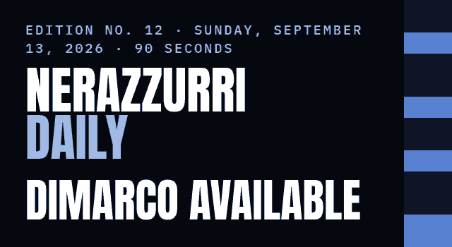

Sky Sport says Federico Dimarco trained with the full group on Saturday and is available for Udinese on Monday, though Chivu may still hold him back with Roma away next weekend. Chivu takes questions today at 8:00 AM ET (14:00 CEST), streamed on the club's own channels. Inter's matchday guide gives Luca Pairetto the whistle at San Siro.
| TODAY No match CHIVU SPEAKS 8:00 AM ET · 14:00 CEST |
| LAST Real Madrid 2–1 Inter CARLOS AUGUSTO 77' · CHAMPIONS LEAGUE |
| NEXT Udinese HOME MON 2:45 PM ET · 20:45 CEST |
Inter's own communiqué puts Cristian Chivu's pre-match press conference at 8:00 AM ET (14:00 CEST) today at Appiano Gentile, live on the club's official channels.
Inter have published no lineup and no injury list. Everything under the red bar is press.
INTER.IT · SEP 11
The club's matchday guide names Luca Pairetto for Monday's Serie A matchday 4 at San Siro, with Marini on VAR. Inter say the last tickets are on sale and the gates open at 12:45 PM ET (18:45 CEST), with no season-ticket resale for this one.
INTER.IT · SEP 13
Inter Women play their first Women's Champions League match on Tuesday, September 22 against BK Häcken of Sweden, 12:45 PM ET (18:45 CEST) at the Stadio Brianteo in Monza. Seats are €10 and €5, with a €1 rate for season-ticket holders, Inter Club members, under-18s and women.
INTER.IT · SEP 11
Sky Sport's Raffaele Caruso reports that Federico Dimarco trained with the full group at Appiano Gentile on Saturday, after the knee sprain that kept him out at the Bernabéu, and is available for Monday. The same report has Chivu weighing whether to use him at all with Roma away on Saturday, and Carlos Augusto keeping the left after his goal in Madrid.
SKY SPORT VIA FCINTERNEWS · SEP 12
Speaking to Sky Sport at the US Open, Ronaldo said the Bernabéu defeat was an ordinary result, and that "L'Inter è ancora favorita per lo scudetto" — Inter are still the favorites for the title.
SKY SPORT VIA FCINTER1908 · SEP 12
Inter Women lost on Saturday too, 1–0 to Juventus in the Serie A Women's Cup semifinal in Biella, on a Van Diemen own goal at 34.
Scorers and minutes are the club's own match reports.
SERIE A FORM W W W · THREE FROM THREE · NINE POINTS
| Udinese HOME MON, SEP 14 · SERIE A · MATCHDAY 4 2:45 PM ET · 20:45 CEST · US TV: PARAMOUNT+ |
| Roma AWAY SAT, SEP 19 · SERIE A · MATCHDAY 5 12:00 PM ET · 18:00 CEST · US TV: PARAMOUNT+ |
| Parma HOME SAT, OCT 10 · SERIE A · MATCHDAY 6 12:00 PM ET · 18:00 CEST · US TV: PARAMOUNT+ |
| Club Brugge HOME TUE, OCT 13 · CHAMPIONS LEAGUE 3:00 PM ET · 21:00 CEST · US TV: NOT YET PUBLISHED |
| Bologna AWAY SAT, OCT 17 · SERIE A · MATCHDAY 7 12:00 PM ET · 18:00 CEST · US TV: PARAMOUNT+ |
Times are the club's and the league's. US listings come from the published Serie A schedules at World Soccer Talk and Sports Media Watch, neither of which lists the Champions League dates yet.
YOUR CALL FOR SUNDAY · He is fit, and Roma are five days away. One tap.
Reply to this email and tell me where you're reading from, and how Inter got you. I read every one. And if you know one Inter fan who'd want this, forward it to them — that's how this grows.
NEXT EDITION: MONDAY, SEPTEMBER 14 — WHAT CHIVU SAID, AND THE TEAM FOR UDINESE